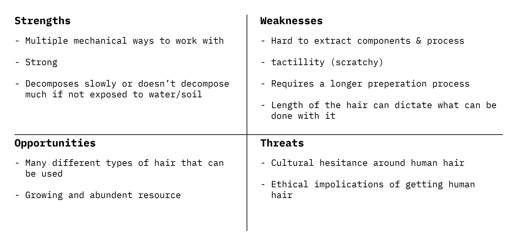
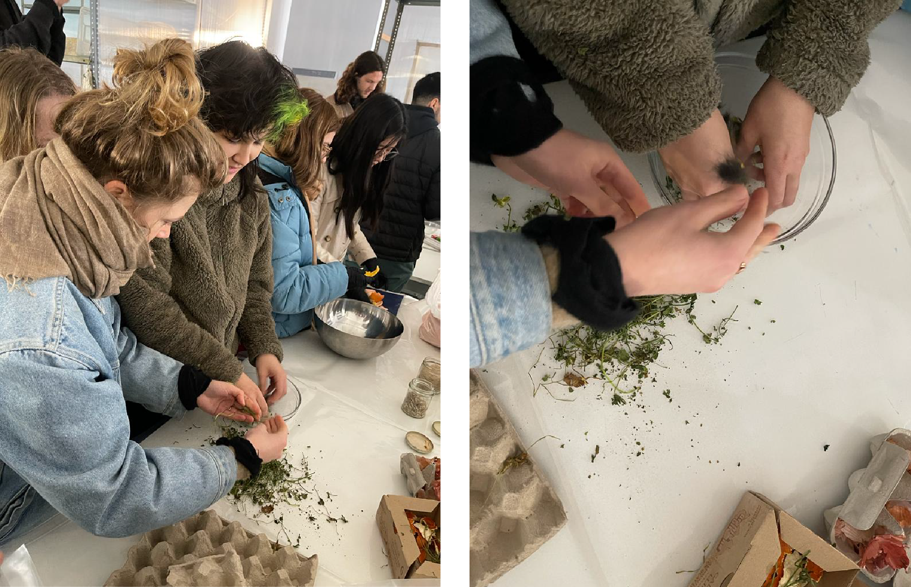
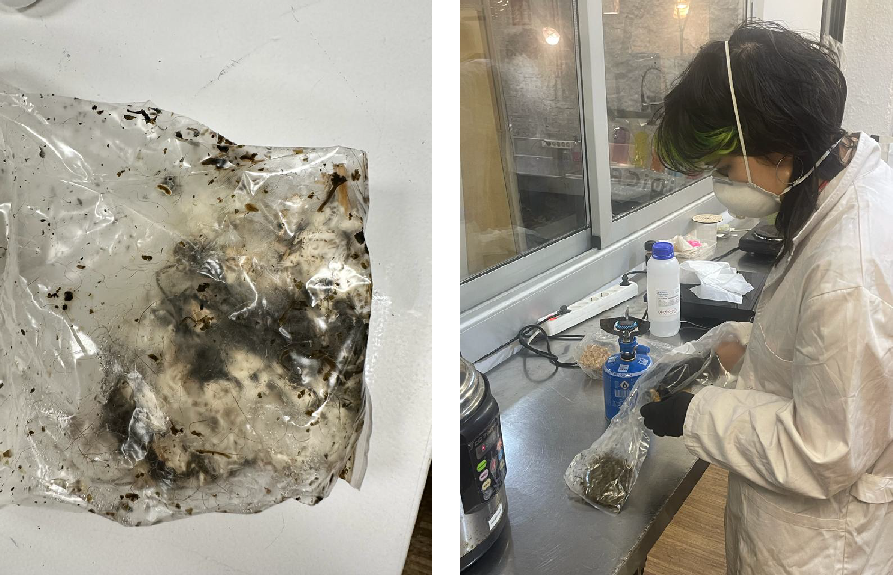
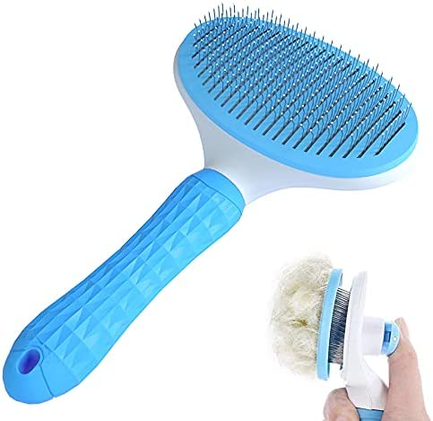
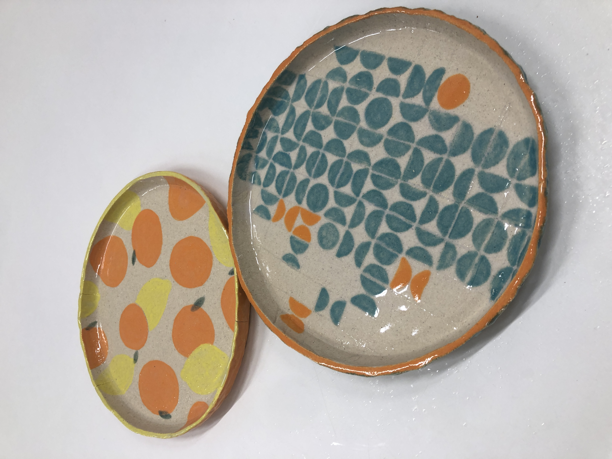

Redesigning Materials¶
Deliverables¶
SWOT Analysis¶

Presentation¶
Reflection¶
These two weeks were quite new for me! I’ve never really thought much about biomaterials before, like I knew about them, but it was something I always thought about in passing. Getting some dedicated time to experiment and explore was much appreciated.
So I missed the first day (thank you mental illness!), which SUCKED because it seemed like so much fun. Plus having someone to help you out when you first try out a new pursuit can be very helpful. This also meant, that I was not there when the first assignment about the different material evaluation was given. I tried to do it, but lacked a little context and just decided it wasn’t worth trying to do it very confused (sorry!).
My first hands on day was at S-Biotica with the mycelium, which was very exciting! I really enjoyed that this workshop was added to our curriculum this year. I have never even heard you could make objects our of mycelium, so a very cool new frontier.

We were lucky enough to be the ones who got their material pressure cooked! So when we got back to IAAC, I inoculated our materials with the base mycelium mixture

And as you can see here – it grew! Lara came and looked at it on Friday (Feb 3) and said that it is actually a good outcome. It could grow a little better WITH the cat hair, but it isn’t nothing – so that is exciting. But now, I don’t really know what to do with it. I’ve heard that you can “train” mycelium to get better with a material, but I have do some research about this (or email Jess!).
Then came experimenting with the hair. We used a combo of my hair (I recently gave myself a haircut) and my cat’s hair.
Below is a video of me brushing them! The brush there wasn’t that effective, so I went out and got a brush similar to the one below. From my experience with my cat in Canada, this type of brush is REALLY effective as saving and matting the hair for future use (just in case YOU want to collect your cats’ hair).

So, I wasn’t as on top of brushing as I wanted to be. Mainly because, as you can see in the video, my cats can be a little difficult to brush. They run around the house like it is a little brushing game, and I just don’t have the patience for that. So we mostly used my hair in the experiments
THOUGH I did use their hair to make little cat hair beads:

I also tried experimenting with what I though was some sort of wool in the class, but it turned out to be some sort of lint (?). It would initially felt together, but would fall apart right away. So that was a big failure.
The rest of the experiments are in the presentation and are described there. All together, I wish that our team did more experimentation with hair. I have always been super interested in how we can make materials from personal waste, so I really enjoyed experimenting but it was not everyone’s interest. They were way better at describing and storytelling about what we did – which was much needed!
I am not sure how much I will experiment with this in the future, I am EXTREMELY curious about this medium – though feel like it may fall to the wayside due to my other interest being a little more pressing.
But I am very thankful for this week! Thanks Lara, Jess, and Laura!
What I created these weeks¶
Digital¶
Physical¶
